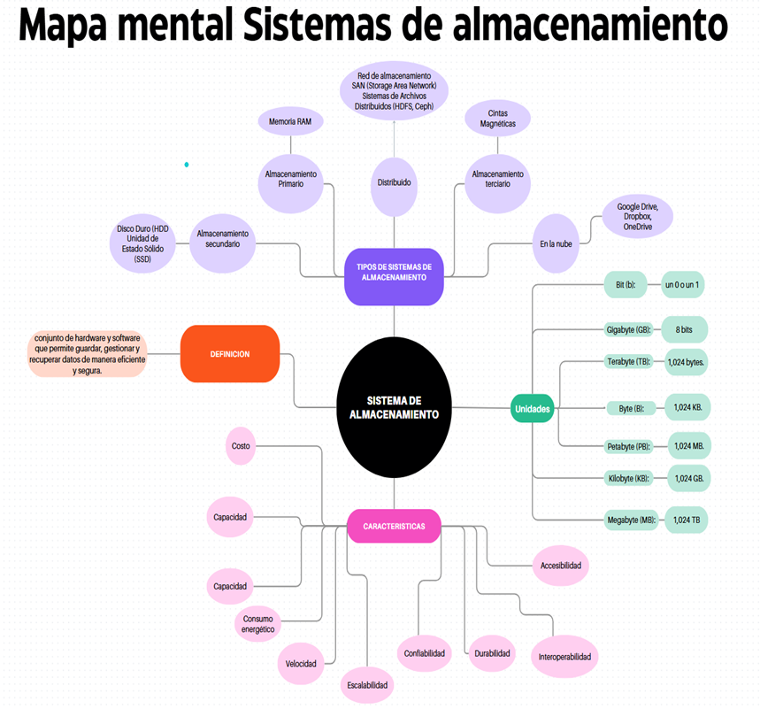

¿Por qué importan los sistemas de almacenamiento?
Un sistema de almacenamiento es el conjunto de medios físicos o lógicos, controladores, redes, software, políticas y procedimientos que permite conservar datos y recuperarlos de forma confiable. Sin él, la información desaparece al apagar el equipo y ninguna organización podría operar, analizar ni decidir.
Esta aplicación organiza el tema en pasos: entender los tipos de almacenamiento (primario, secundario y terciario), reconocer las tecnologías, las unidades de medida y las formas de protegerlos, evaluar un dispositivo o una solución con criterios estructurados, practicar la clasificación con ejemplos reales y revisar tu progreso en un dashboard con gráficos y análisis.
Ir directo a:
Sistemas de almacenamiento — Material Principal
Lectura central del Reto 3 de Byteon: definición, unidades y tipos de almacenamiento. Puedes consultarlo directamente aquí o abrirlo en pantalla completa.
Material de apoyo y lecturas complementarias
Accede a los documentos PDF de referencia y estudio sobre sistemas, dispositivos y unidades de almacenamiento.
Material de Apoyo No 1
Sistemas de almacenamiento — Documento de estudio: arquitectura, conectividad, protección, seguridad y criterios de selección.
Abrir documento PDF ↗Material de Apoyo No 2
Medidas de almacenamiento en informática — Del bit al yottabyte, equivalencias y velocidad del procesador.
Abrir documento PDF ↗Material de Apoyo No 3
Dispositivos de almacenamiento — Jerarquía de memoria, discos, SSD, cintas, discos ópticos y sistemas de archivos (Universidad de Sevilla).
Abrir documento PDF ↗LucIA la Inteligencia Artificial guía
Presentación:
LucIA la Inteligencia Artificial guía
Hola Aprendiz, soy LucIA, tu inteligencia artificial aliada en este viaje por el universo del talento humano. Hoy hemos llegado al Reto 3 de Byteon: el ecosistema de almacenamiento de los Neogenos, donde los datos son el recurso más valioso y la clave para el orden y la estabilidad del planeta.
En Byteon, cada fragmento de información se procesa, almacena y distribuye con absoluta eficiencia. Los antiguos métodos de la «Aspís-Dóry» son la base para conservar el conocimiento, y hoy guardar datos de forma segura, disponible y accesible es un pilar para las organizaciones y para cada usuario.
Tu misión: conocer las unidades y los tipos de almacenamiento, evaluar dispositivos y soluciones, y clasificar ejemplos reales para ganar NEXs.
Sistemas de Almacenamiento - Byteon
Lectura directa del documento de sistemas de almacenamiento en Byteon. Puedes leerlo directamente aquí o descargarlo.
Tipos de almacenamiento según su nivel en la jerarquía
No existe un solo tipo de memoria que cumpla todos los requisitos: se combinan varias tecnologías. Hacia abajo en la jerarquía hay menor costo y mayor capacidad, pero también mayor tiempo de acceso.
Almacenamiento primario
Es el más rápido y el que la CPU usa directamente: registros, memoria caché y memoria interna (ROM y RAM). Se basa en circuitos semiconductores y, en el caso de la RAM, pierde su contenido al apagar el equipo.
Almacenamiento secundario
Es la memoria externa: conserva la información a largo plazo sin energía. Su acceso es indirecto, porque los datos primero se transfieren a la memoria principal mediante dispositivos de entrada/salida.
Almacenamiento terciario
Es el almacenamiento masivo para respaldo, archivo y recuperación de datos: enorme capacidad y bajo costo por terabyte, a cambio de tiempos de acceso mayores.
Profundizar: cómo se clasifica la memoria y otras categorías
Según conservación y acceso
No volátil: conserva la información sin energía (ROM, discos, SSD, cintas).
Volátil: la información se borra al cortar la energía (RAM).
Acceso aleatorio: se llega a cualquier dato con la misma eficacia. Acceso secuencial: hay que recorrer el medio (cintas).
Según tecnología, nube y distribución
Tecnología: semiconductor o estado sólido, magnética y óptica (láser).
En la nube: acceso remoto a los datos por Internet.
Distribuido: varios servidores interconectados para ganar redundancia y escalabilidad (SAN, HDFS, Ceph).
Sistemas de almacenamiento: capas, modelos y tecnologías
El diseño de un sistema de almacenamiento equilibra capacidad, rendimiento, disponibilidad, seguridad, recuperabilidad, costo y cumplimiento. No se limita a discos: incluye modelos de acceso, conectividad, copias de seguridad, replicación, cifrado, monitoreo y gobierno.
Capas de un sistema de almacenamiento
Modelos de acceso: bloques, archivos y objetos
Bloques
Divide los datos en bloques direccionables; la aplicación o el sistema operativo gestiona el sistema de archivos.
Fortalezas: baja latencia y alto desempeño. Usos: bases de datos y máquinas virtuales.
Archivos
Organiza la información en carpetas y archivos, y se comparte por red con protocolos como SMB (Windows) y NFS (Linux/Unix).
Fortalezas: familiaridad y colaboración. Usos: directorios compartidos y repositorios documentales.
Objetos
Cada objeto tiene un identificador único, contenido y metadatos, y se accede normalmente por API.
Fortalezas: gran escalabilidad. Usos: copias, multimedia, analítica y archivo.
Arquitecturas y tecnologías principales
DAS — conectado directamente
Almacenamiento unido a un servidor: simple y de baja latencia local, pero con escalabilidad y compartición limitadas.
NAS — archivos por red
Dispositivo o servicio que expone archivos compartidos por SMB o NFS. Administración centralizada, pero depende de la red.
SAN — bloques en red dedicada
Presenta almacenamiento de bloques a los servidores con Fibre Channel o iSCSI. Alto desempeño, mayor costo y complejidad.
Nube e híbrida
Capacidad como servicio con elasticidad y pago por uso. La híbrida combina recursos locales y de nube; exige control de costos y configuración segura.
Discos, SSD y cintas
HDD: capacidad y costo por TB. SSD: baja latencia y más IOPS. Cintas: retención y archivo de largo plazo.
Particiones y sistemas de archivos
Particionado MBR o GPT; sistemas FAT32 y NTFS (Windows), ext4 (Linux) e ISO9660/UDF (CD y DVD). El formateo lógico reserva espacio para gestión.
Unidades de medida del almacenamiento
Un bit es un 0 o un 1; ocho bits forman un byte, que equivale a un carácter. Los cálculos binarios se basan en múltiplos de 1.024.
| Unidad | Medida binaria | Equivalencia |
|---|---|---|
| Kilobyte (KB) | 210 | 1.024 bytes |
| Megabyte (MB) | 220 | 1.024 KB |
| Gigabyte (GB) | 230 | 1.024 MB |
| Terabyte (TB) | 240 | 1.024 GB |
| Petabyte (PB) | 250 | 1.024 TB (grandes centros de datos) |
| Exabyte (EB) | 260 | 1.024 PB |
| Zettabyte (ZB) | 270 | 1.024 EB |
| Yottabyte (YB) | 280 | 1.024 ZB |
Velocidades de transferencia de referencia
| Componente | Velocidad aproximada | Observación |
|---|---|---|
| Memoria RAM | 25-50 GB/s | Almacenamiento primario, el más rápido. |
| SSD M.2 NVMe | ~3 GB/s | Se conecta por PCIe. |
| SSD SATA 3 | ~500 MB/s | Interfaz de hasta 600 MB/s. |
| Disco duro HDD | ~200 MB/s | Tiempo medio de acceso cercano a 10 ms. |
Rendimiento, disponibilidad y copias de seguridad
Indicadores y RAID
IOPS (operaciones por segundo), latencia (tiempo de respuesta) y throughput (datos por segundo): dimensionar exige medir la carga, no solo sumar terabytes.
- RAID 0: distribuye datos, mejora rendimiento, no tolera fallos.
- RAID 1: espejo; tolera el fallo de un disco.
- RAID 5: paridad distribuida; tolera un fallo.
- RAID 6: doble paridad; tolera dos fallos.
- RAID 10: espejos distribuidos; rendimiento y redundancia.
RAID no reemplaza una copia de seguridad.
Respaldo, RPO y RTO
- Completa, incremental y diferencial: distintos equilibrios entre espacio y rapidez de restauración.
- Regla 3-2-1: tres copias, en dos tipos de medio, con una fuera del sitio.
- RPO: pérdida de datos máxima aceptable medida en tiempo.
- RTO: tiempo máximo aceptable para restablecer el servicio.
- Una copia no verificada no garantiza la recuperación: hay que probar las restauraciones.
Seguridad, gobierno y criterios de selección
Controles prioritarios
- Clasificar los datos (públicos, internos, confidenciales o sensibles).
- Aplicar mínimo privilegio y autenticación robusta.
- Cifrar en reposo y en tránsito; custodiar las llaves.
- Registrar y monitorear accesos, cambios y fallos.
- Definir retención y eliminación verificable de los datos.
Preguntas para elegir una solución
- ¿Qué aplicaciones y datos se almacenarán (bloque, archivo u objeto)?
- ¿Qué RPO y RTO exige el negocio?
- ¿Cuál es el patrón de I/O y cuánto crecerán los datos?
- ¿Qué restricciones legales o contractuales existen?
- ¿Cuál es el costo total: adquisición, transferencia, licencias, energía y soporte?
Evaluador de almacenamiento
Elige el enfoque según lo que estés evaluando: un dispositivo o medio de almacenamiento, o una solución de almacenamiento completa dentro de una organización. Cada evaluación queda registrada en el Dashboard.
Clasifica el almacenamiento
Se te mostrará la descripción de un medio, dispositivo o servicio de almacenamiento. Decide si es primario, secundario o terciario. Cada partida se registra en el Dashboard.
Dashboard de resultados
Resumen de tus evaluaciones y partidas. Los datos se guardan solo en este navegador; no salen de tu computador.
Puntaje del juego por partida
Veredictos del evaluador (Dispositivo vs. Solución)
Aciertos vs. errores en el juego
Errores por tipo de almacenamiento
📊 Análisis — Evaluador
🎮 Análisis — Juego de clasificación
🚀 Detective espacial Grado No 3
Al alcanzar el desarrollo de este reto serás considerado Detective espacial Grado No 3 y te recompensará con 0 NEXs.
Actividad presencial: la feria del almacenamiento
La misma dinámica del juego digital, pero en papel, para trabajar en grupo dentro del ambiente de formación.
Cómo organizarla
- Forma equipos de 3 a 4 personas y entrega a cada equipo tres sobres o áreas rotuladas: Primario, Secundario y Terciario.
- Imprime y recorta las 12 tarjetas con el botón de abajo (cada tarjeta describe un medio o servicio de almacenamiento, sin revelar su tipo).
- Baraja las tarjetas y repártelas por igual entre los equipos.
- Da 8 minutos para que cada equipo lea, discuta y coloque cada tarjeta en el sobre que considere correcto.
- Al terminar, cada equipo debe justificar en voz alta al menos tres de sus decisiones.
- Revisa los resultados con la hoja de respuestas (segunda página de la impresión) y discutan los casos donde hubo desacuerdo.
- Cierre grupal: cada equipo comparte un ejemplo de almacenamiento que use en su vida diaria o en su trabajo y a qué nivel de la jerarquía pertenece.
Mapa Mental: Sistemas de almacenamiento
Estructura visual completa de los tipos, modelos, tecnologías, unidades y medidas de protección del almacenamiento de datos.
